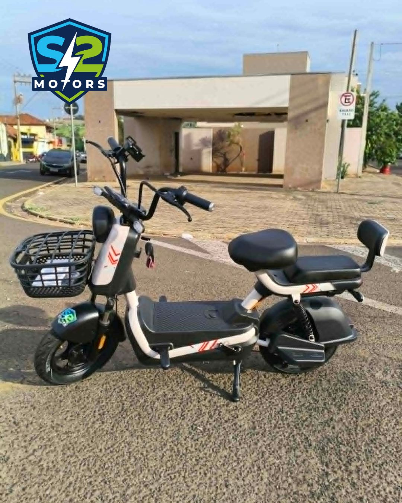
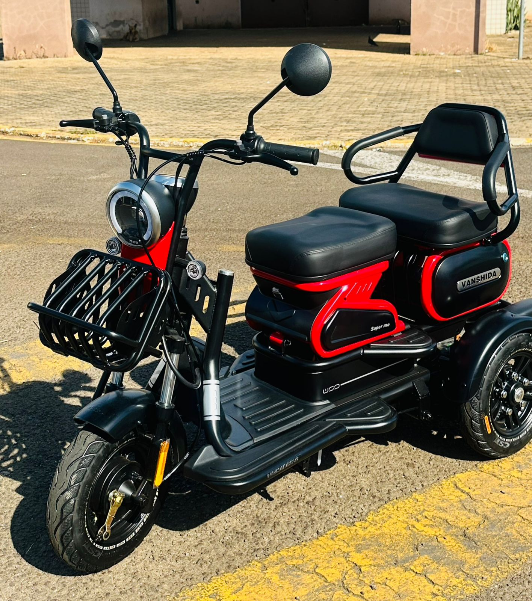

Escolha seu
próximo
caminho.
Explore os modelos, compare o que importa e fale com a equipe para confirmar detalhes e disponibilidade.

MOVE
ELÉTRICO
Encontre seu
próximo modelo.
Compare características e monte uma seleção para consultar com a equipe.
Fotos e dados dos itens vieram do catálogo WhatsApp da S2. Confirme versão, condições, preço e disponibilidade diretamente com a loja.

Confira os detalhes
antes de escolher.
Compare o que importa para o seu caminho. A equipe da loja pode ajudar a confirmar cada especificação da versão disponível.
- Autonomia e bateriaConfirme a versão
- Freios, pneus e iluminaçãoConfira a unidade
- Garantia e assistênciaConsulte a loja
- Orientação de usoPeça ajuda
Encontre seu formato.
Comece pelo tipo de caminho que você quer percorrer. Depois compare os detalhes.
Compare com
confiança.
Quer entender as diferenças entre modelos? Peça detalhes sobre autonomia, uso recomendado, entrega e assistência diretamente à loja.
Pedir informações ↗O próximo passo é
conversar com a equipe.
Endereço e horário serão confirmados pela loja. Chame a S2 para consultar modelos, disponibilidade e atendimento.